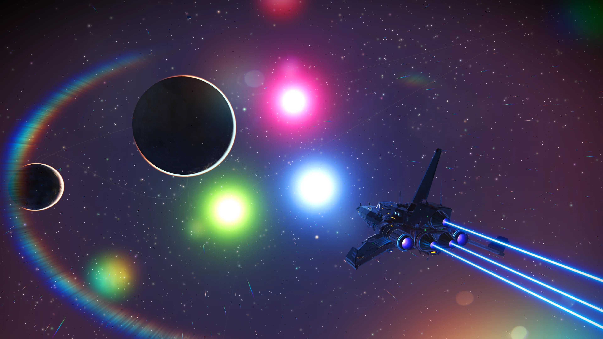
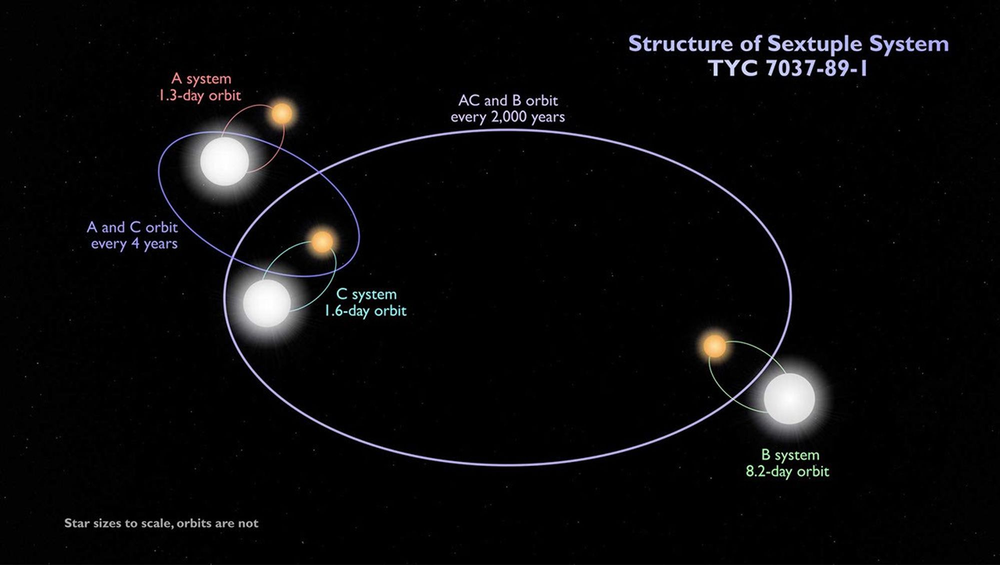

MULTIPLE-STAR PLANETARY SYSTEMS

Multiple-star planetary systems are hosted by three or more stars bound together by gravity. Many are “hierarchical”: for example, a close binary plus a third star orbiting farther out, which can remain stable for long times.
The nearest star system, Alpha Centauri, is a well-known triple system: a close pair (A and B) and a distant companion (Proxima Centauri).
Dynamics
- Hierarchical structure: stability is more likely when orbits are well-separated.
- Perturbations: long-term gravitational tugs can change planetary inclinations and eccentricities.
- Planet formation: disks can be truncated or warped, affecting where planets can form.
